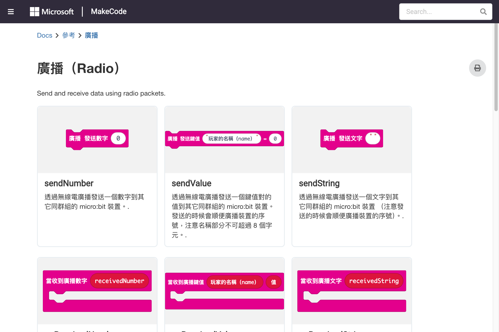

單元 7：Radio 無線電
send/receive、群組、功率、多板通訊
7.1 Radio 無線電總覽
Radio 分類讓多塊 Micro:bit 之間透過 2.4GHz 無線電訊號進行通訊，無需 Wi-Fi 或藍牙。
前置條件：Radio 功能僅適用於 Micro:bit V2。瀏覽器模擬器無法模擬無線電功能，需使用兩塊實體 Micro:bit 測試。
| 積木 | 參數 | 說明 |
|---|---|---|
radio send number | value (number) | 發送數字訊息 |
radio send string | value (string) | 發送文字訊息 |
radio send value | name (string), value (number) | 發送具名數值 |
radio send buffer | buffer (Buffer) | 發送二進位資料 |
on radio received number | — | 收到數字時觸發 |
on radio received string | — | 收到文字時觸發 |
on radio received value | — | 收到具名數值時觸發 |
on radio received buffer | — | 收到二進位資料時觸發 |
radio set group | id (number) | 設定通訊群組（0-255） |
radio set transmit power | power (0-7) | 設定發射功率 |
radio set transmit serial number | on (boolean) | 是否在訊息中加入裝置序號 |
radio received packet | — | 檢查是否有收到訊息 |
7.2 發送與接收
發送端（Sender）
on button A pressed radio send number 42 on button B pressed radio send string "Hello!"
接收端（Receiver）
on radio received number value show number value on radio received string value show string value
將上述兩段程式分別燒錄到兩塊 Micro:bit，A 板發送，B 板接收顯示。

Radio 積木參考

無線電通訊
7.3 群組設定
on start radio set group 1
只有設定相同群組 ID 的 Micro:bit 才能互相通訊。範圍 0~255。
| 群組 ID | 用途 |
|---|---|
| 0 | 預設群組（所有新專案） |
| 1-255 | 自訂群組，避免干擾其他人的專案 |
注意：在教室環境中，若多組學生同時使用 Radio，務必為每組設定不同的群組 ID，避免訊息互相干擾。
7.4 發射功率
on start radio set transmit power 7
| 功率等級 | 說明 | 建議距離 |
|---|---|---|
| 0 | 最低功率 | 1-2 公尺 |
| 1-3 | 低功率 | 2-5 公尺 |
| 4-5 | 中功率 | 5-10 公尺 |
| 6-7 | 高功率 | 10-30 公尺 |
7.5 具名數值通訊
使用具名數值可以一次傳送多個資料欄位：
發送端
on button A pressed radio send value name "temp" value temperature (°C) radio send value name "light" value light level
接收端
on radio received value name value
if name == "temp" then
show string "T:"
show number value
else if name == "light" then
show string "L:"
show number value
7.6 範例：無線按鈕配對
按下 A 板的 A 鍵，B 板顯示愛心：
A 板（發送端）
on start radio set group 1 on button A pressed radio send number 1
B 板（接收端）
on start
radio set group 1
on radio received number value
if value == 1 then
show icon Heart
else
clear screen
7.7 範例：遙控器與接收器
遙控器（A 板）
on start radio set group 1 on button A pressed radio send string "left" on button B pressed radio send string "right" on button A+B pressed radio send string "stop"
接收器（B 板）
on start
radio set group 1
on radio received string value
if value == "left" then
show string "L"
else if value == "right" then
show string "R"
else if value == "stop" then
clear screen
看完這單元你應該能：
- 使用 radio send 發送數字、文字和具名數值
- 使用 on radio received 接收訊息
- 設定群組 ID 避免通訊干擾
- 調整發射功率控制通訊距離
- 建立多板互動的無線電專案